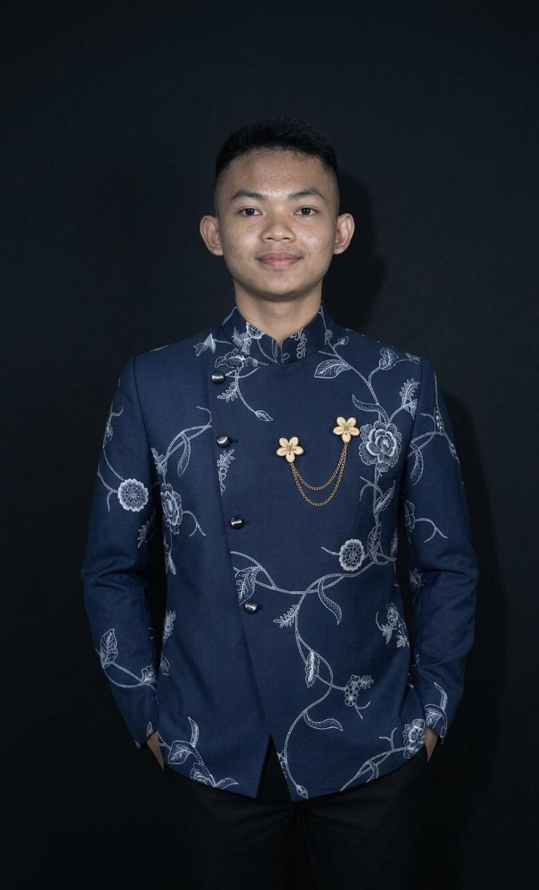
Discovering the Culture
of Jombang for the World
Jombang holds a wealth of cultural heritage reflecting the values of East Javanese ancestors — from Jatiduwur mask theatre, philosophically rich batik, Majapahit temple architecture, to authentic local cuisine with a worldwide following.
Visitor Statistics
Every visit is tracked automatically from launch day — March 1, 2026. Data refreshes in real time by visitor origin.
Loading data...
Tradition & Living Culture
Religious values, Javanese custom, and the spirit of communal life that have endured across generations.
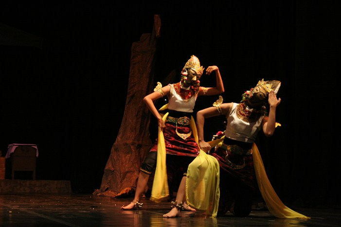
Jatiduwur Mask Theatre
A rare mask performance art from Jatiduwur village — blending dance, drama and gamelan in the ancient Panji cycle, a purely Javanese epic predating even the Mahabharata adaptations.
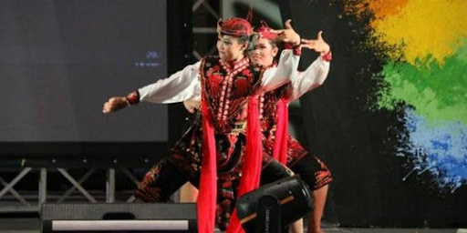
Tari Remo
The defining dance of East Java, born in Jombang. Its thunderous gejug foot-stamps and lightning-quick trecet footwork embody the warrior spirit — now performed at national state ceremonies.
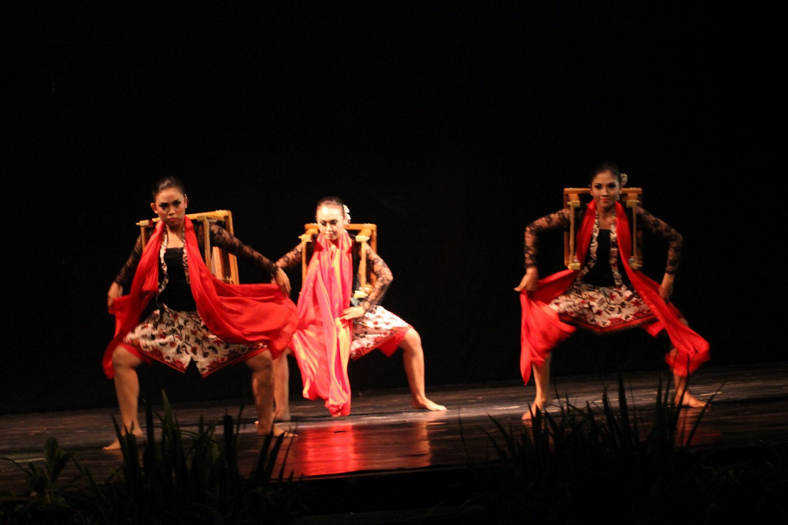
Ludruk
East Java's greatest folk theatre, born right here in Jombang. Combining Tari Remo, comedy, song and drama — it was once a living propaganda weapon that fuelled Indonesia's independence movement.
The cultural fabric of Jombang is woven from threads of Islamic tradition, Javanese adat, and agrarian communal values that have held for centuries — adapting gracefully to the modern world while preserving an essential character entirely its own.
Traditional Batik
Local artistry transforming motif, colour and philosophy into a textile art form of profound cultural depth.
↑ Visual interpretation of Jombang's signature batik motifs — Kawung, Parang, Galaran, Bintang, Lereng, Ceplok
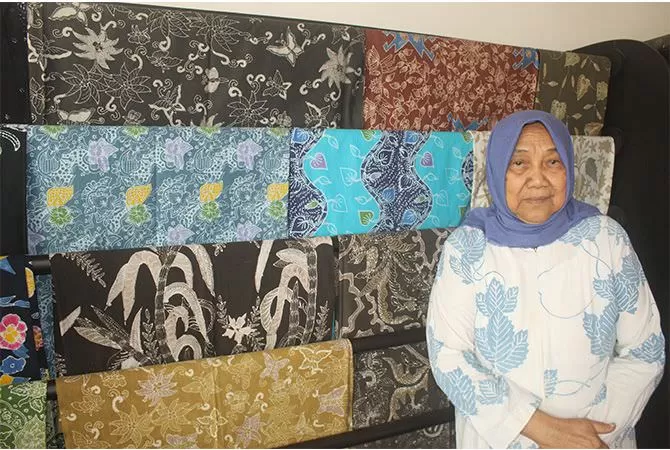
The Pioneer of Jombang Batik
Maniati founded Sekar Jati Star — the first batik enterprise in Jombang. She pioneered a batik-making tradition that has since grown to encompass hundreds of uniquely philosophical regional motifs.
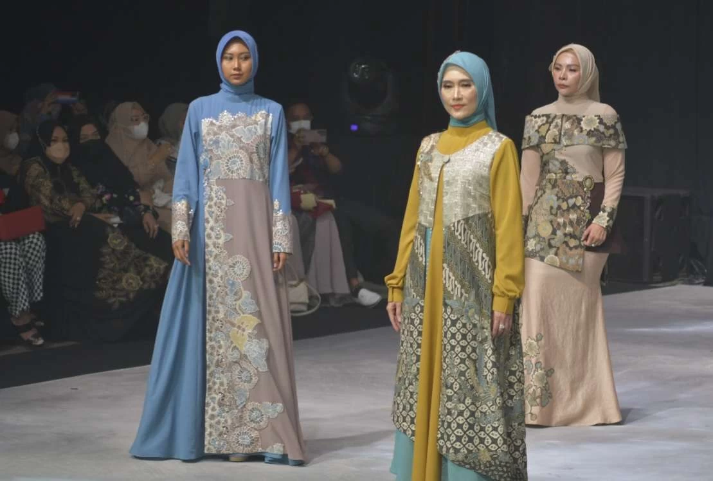
The Beauty of Pattern
Natural dyes, hand-drawn wax technique, and deep cultural symbolism unite in every cloth — making Jombang batik a visual language that speaks in colour, line and meaning simultaneously.
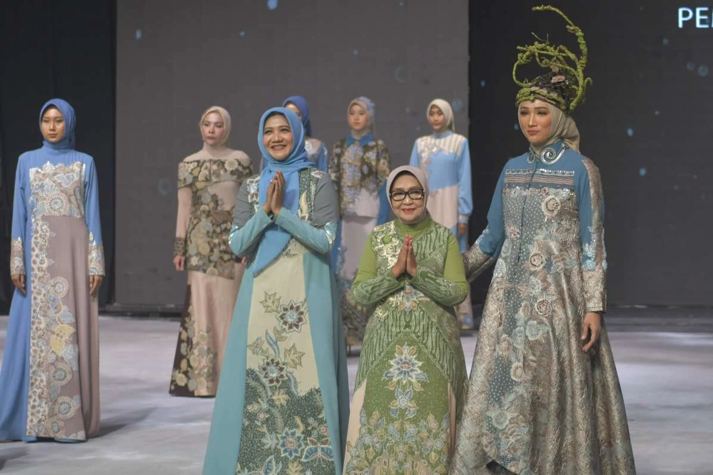
Textile Heritage
Centuries of refined craft passed down through families. The Sekar Jati, Wringin Sungsang and Panji motifs have become Jombang's textile signature — increasingly recognised on the international stage.
Jombang's batik tradition represents centuries of refined artistry, where natural dyes, hand technique and cultural symbolism converge to produce textiles whose beauty goes far beyond aesthetics — becoming a statement of identity and regional pride.
Traditional Attire
Ceremonial dress as a visual language expressing dignity, moral values and community identity.
Traditional Dress
Jombang's traditional garments weave Javanese elegance with local wisdom — reflecting social standing, spiritual values and a deep sense of communal belonging passed through generations.
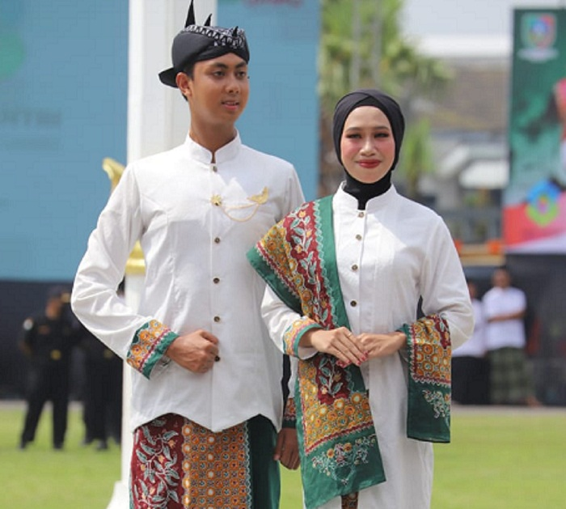
Official Jombang Batik Garment
Komodoningrat for women and Kudawaningpati for men — the official ceremonial dress of Jombang Regency, adopted as a proud symbol of regional identity at formal state occasions.
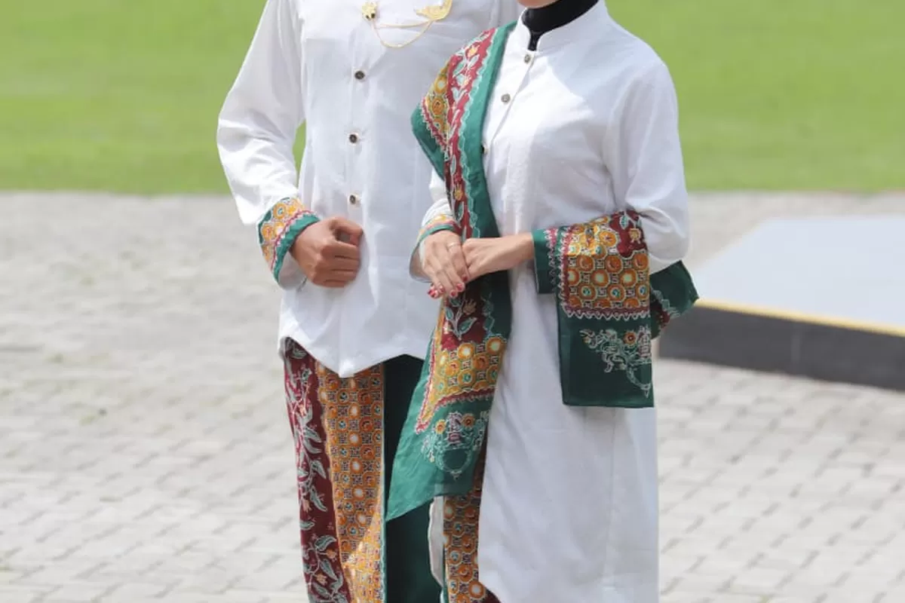
Traditional Accessories
From patterned jarik cloth to selendang sashes and ceremonial headwear — each accessory completes the ensemble with layers of symbolic meaning rooted in cultural and historical significance.
Jombang's ceremonial dress is a visual language articulating social occasion, spiritual meaning and communal belonging through deliberate choices of cloth, motif and accessory — a living archive worn on the body.
Preserving Identity,
Inspiring the World
Jombang is known not only as a centre of Islamic learning, but as a region of extraordinary cultural wealth — expressed through art, batik, tradition, architecture, music and culinary heritage spanning generations.
Traditional Architecture
The physical legacy of Majapahit and the Javanese philosophy of space, rooted in environment and cultural wisdom.
Candi Rimbi
A 14th-century Majapahit-era temple in Bareng district — a silent witness to the golden age of East Javanese civilisation, its Hindu-Buddhist stonework still standing after seven centuries.
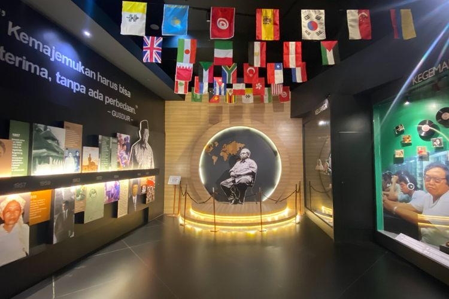
KH. Hasyim Asy'ari Museum
A museum honouring the National Hero and founder of Nahdlatul Ulama — a fusion of traditional Javanese architecture with the Islamic values that have shaped Jombang's identity for over a century.
Architectural Heritage
The Joglo and traditional pendapa — masterworks of Javanese spatial philosophy, where every room carries meaning: the open pendapa for community gathering, the inner dalem for the sacred.
From the pendapa for deliberation to the sacred inner dalem, every space in Javanese architecture carries profound meaning. Jombang's built heritage is a physical record of how ancestors understood the relationship between nature, humanity and the divine.
Traditional Music
An expression of life's values and communal spirit that has grown within society across the generations.
Traditional Songs
A melodic inheritance passed down orally for centuries — every lyric holds local wisdom, prayer and the hopes of Jombang's ancestors, carried forward in living voice rather than written score.
Gamelan & Identity
The resonance of Jombang's gamelan reflects a community's identity — the interplay of slendro and pelog tunings producing a harmonic universe found nowhere else in quite this particular form.
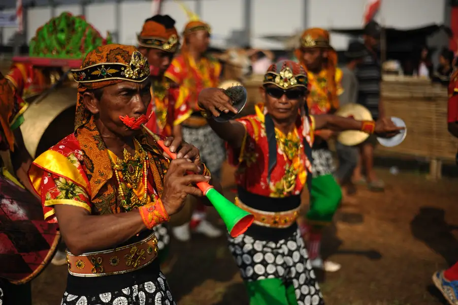
Performing Arts
From the flowing tones of gamelan to the rousing beat of kendang — traditional music in Jombang bridges the tangible world and the spiritual realm of the ancestors, present at every meaningful moment.
From gamelan echoing through pesantren courtyards to the melodies of Tari Remo — traditional music in Jombang is inseparable from the rhythm of daily life, present in every significant passage of its people.
Traditional Cuisine
Local flavours reflecting the habits and unique gastronomy of a region developed across centuries.
Nasi Kikil
Jombang's culinary icon across generations — braised beef tendon in deeply aromatic East Javanese spice, served over white rice with petis sambal. A dish that tastes of memory and place.
Local Flavour Identity
Local spice, age-old cooking methods and fresh nusantara ingredients create an authentic Jombang flavour profile impossible to replicate elsewhere — the product of a place, not a recipe.
Gastronomic Heritage
Recipes kept by ancestors for centuries — traditional Jombang food is now promoted as gastronomic heritage, supporting cultural tourism while strengthening pride in the region's distinct identity.
Jombang's culinary heritage is a rich tapestry woven from local ingredients, ancient technique and recipes passed from grandmother to grandchild — cultural transmission at its most personal, recorded not on paper but in taste and memory.